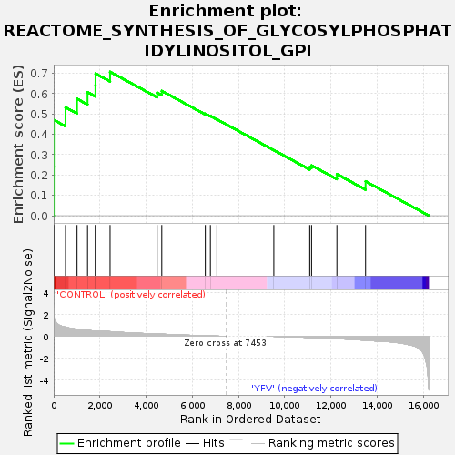
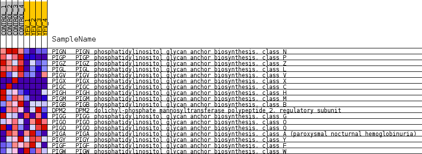
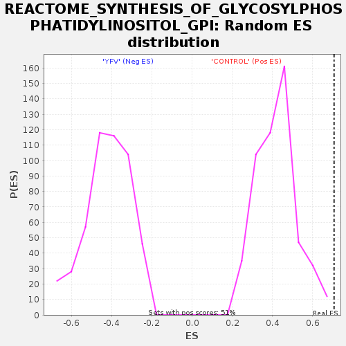

| Dataset | MATRIZ_GSE99081_collapsed_to_symbols.gsea_CLASE_99081.cls#CONTROL_versus_YFV |
| Phenotype | gsea_CLASE_99081.cls#CONTROL_versus_YFV |
| Upregulated in class | CONTROL |
| GeneSet | REACTOME_SYNTHESIS_OF_GLYCOSYLPHOSPHATIDYLINOSITOL_GPI |
| Enrichment Score (ES) | 0.7074841 |
| Normalized Enrichment Score (NES) | 1.6705635 |
| Nominal p-value | 0.0 |
| FDR q-value | 1.0 |
| FWER p-Value | 0.597 |

| SYMBOL | TITLE | RANK IN GENE LIST | RANK METRIC SCORE | RUNNING ES | CORE ENRICHMENT | |
|---|---|---|---|---|---|---|
| 1 | PIGN | phosphatidylinositol glycan anchor biosynthesis, class N | 4 | 2.135 | 0.2406 | Yes |
| 2 | PIGP | phosphatidylinositol glycan anchor biosynthesis, class P | 6 | 2.041 | 0.4708 | Yes |
| 3 | PIGZ | phosphatidylinositol glycan anchor biosynthesis, class Z | 512 | 0.826 | 0.5329 | Yes |
| 4 | PIGL | phosphatidylinositol glycan anchor biosynthesis, class L | 1011 | 0.641 | 0.5745 | Yes |
| 5 | PIGV | phosphatidylinositol glycan anchor biosynthesis, class V | 1465 | 0.536 | 0.6071 | Yes |
| 6 | PIGX | phosphatidylinositol glycan anchor biosynthesis, class X | 1808 | 0.500 | 0.6425 | Yes |
| 7 | PIGC | phosphatidylinositol glycan anchor biosynthesis, class C | 1811 | 0.500 | 0.6987 | Yes |
| 8 | PIGH | phosphatidylinositol glycan anchor biosynthesis, class H | 2440 | 0.421 | 0.7075 | Yes |
| 9 | PIGM | phosphatidylinositol glycan anchor biosynthesis, class M | 4477 | 0.204 | 0.6050 | No |
| 10 | PIGB | phosphatidylinositol glycan anchor biosynthesis, class B | 4678 | 0.185 | 0.6135 | No |
| 11 | DPM2 | dolichyl-phosphate mannosyltransferase polypeptide 2, regulatory subunit | 6562 | 0.034 | 0.5013 | No |
| 12 | PIGG | phosphatidylinositol glycan anchor biosynthesis, class G | 6781 | 0.022 | 0.4904 | No |
| 13 | PIGO | phosphatidylinositol glycan anchor biosynthesis, class O | 7064 | 0.007 | 0.4738 | No |
| 14 | PIGQ | phosphatidylinositol glycan anchor biosynthesis, class Q | 9526 | -0.004 | 0.3225 | No |
| 15 | PIGA | phosphatidylinositol glycan anchor biosynthesis, class A (paroxysmal nocturnal hemoglobinuria) | 11080 | -0.108 | 0.2389 | No |
| 16 | PIGY | phosphatidylinositol glycan anchor biosynthesis, class Y | 11159 | -0.117 | 0.2473 | No |
| 17 | PIGF | phosphatidylinositol glycan anchor biosynthesis, class F | 12255 | -0.219 | 0.2045 | No |
| 18 | PIGW | phosphatidylinositol glycan anchor biosynthesis, class W | 13496 | -0.364 | 0.1691 | No |

